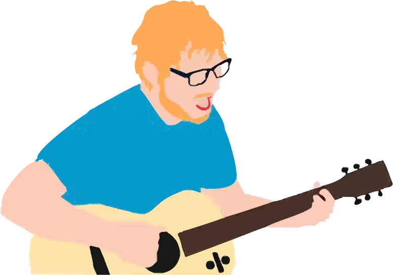
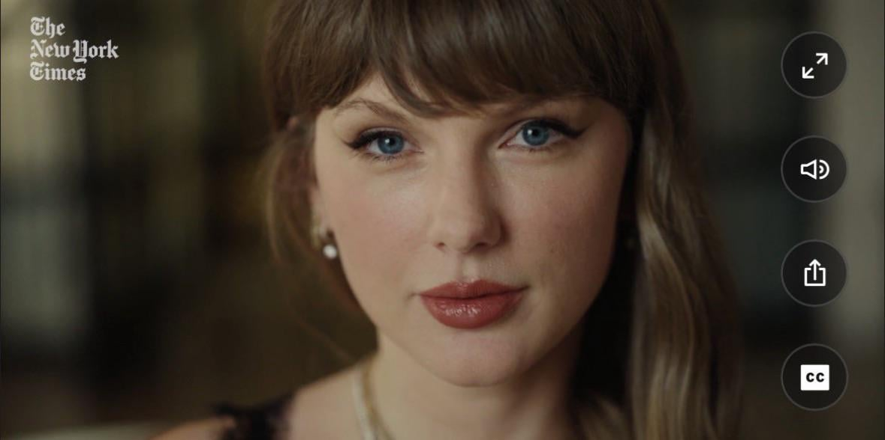
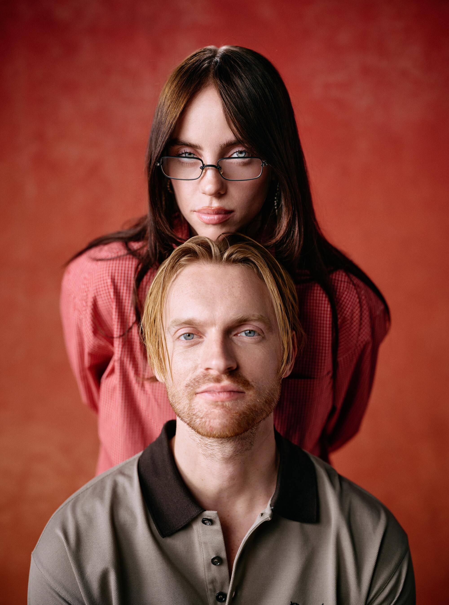
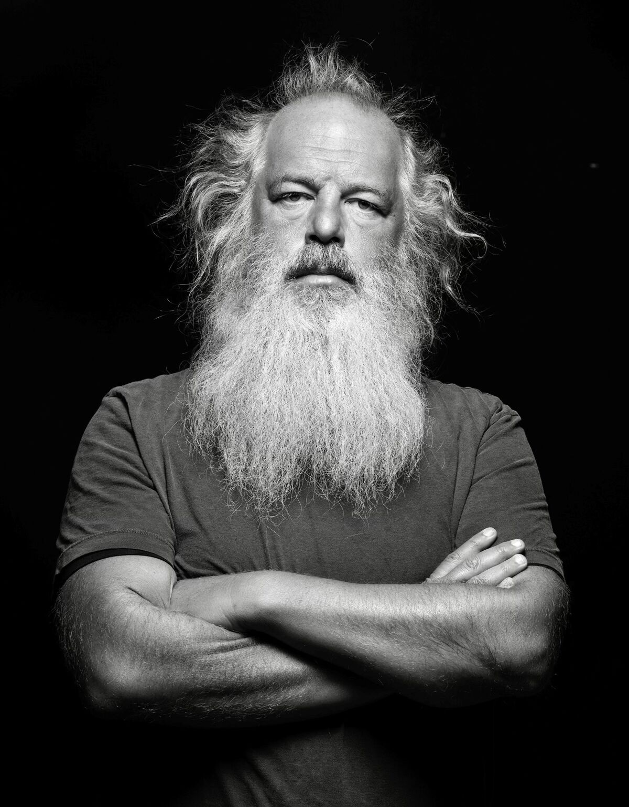
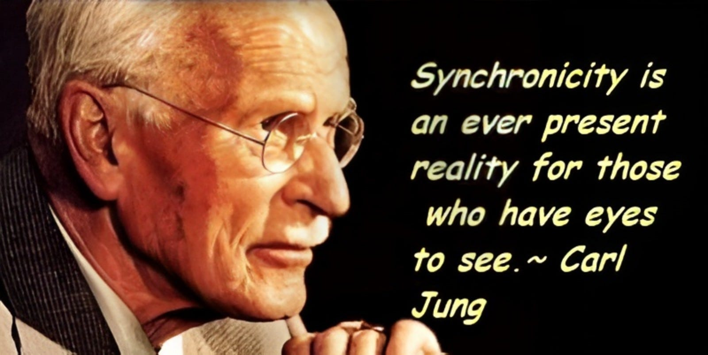

Meeting 04.30.26
Notes, resources, reflections, and creative sparks from our first gathering on creative process.
Big Theme
This gathering centered on creative process: how artists find ideas, build consistency, protect their attention, finish work, and stay connected to both solitude and the world.
The conversation moved between practical habits, spiritual intuition, artistic discipline, and the very real tension between wanting to create and feeling overwhelmed by modern life.
The Artist’s Way
Julia Cameron’s The Artist’s Way offers a framework for unlocking creativity through consistency, honesty, and removing self-censorship.
It treats creativity as a practice — not a rare lightning strike. Morning Pages came up as one possible tool for clearing mental clutter and making space for creative truth.


Songwriting Philosophies
Some artists create through volume: writing many songs to find the strongest few. Others work with a more selective approach, focusing on fewer songs that deeply serve the project.
Neither path is “better.” The useful question is: what process helps you actually finish meaningful work?



Key Ideas We Discussed
Finishing Songs
Finishing songs is its own creative muscle. Starting ideas can feel exciting, but discipline turns inspiration into actual work.
Perceived Competence
Creative spaces can reward polish and confidence, even when uncertainty and sensitivity are part of the real artistic process.
Protected Creative Time
One hour a week of dedicated, protected creative time can become a powerful anchor.
Creative Co-Working
Working alone, together. Accountability without pressure. Presence without performance.
Creativity as a Way of Life
Creativity does not have to live only inside finished products. It can shape how we spend our time, energy, and attention.
Phones + Overstimulation
Technology can support us and dysregulate us. Ideas included app limits, grayscale mode, bePresent, and The Brick.
Solitude + The World
Solitude is sacred for many artists. It gives us space to hear ourselves clearly.
But creating in a vacuum can stifle creativity. Sometimes, to write our best songs or create our best work, we have to immerse ourselves in the world: sit on a bench in the park, wander through a museum, watch a film, observe strangers, colors, sounds, weather, and movement.
Then we return inward — fueled with real material to create from.
Carl Jung + Rick Rubin
Carl Jung offers language for shadow, subconscious material, dreams, synchronicity, and integration.
Rick Rubin brings the focus back to intuition, simplicity, attention, and listening.


Astrology + Synchronicity
Scorpio moon energy, astrological signs, synchronicities, and the soul’s path came up as ways artists interpret timing, intuition, emotional depth, and meaning.
Zodiac & Singer-Songwriter Sun Signs
A playful look at famous singer-songwriters through their sun signs — not archetypes, not vibes, just actual birthdays.
♈ Aries
Lady Gaga • Elton John • Aretha Franklin

♉ Taurus
Adele • Stevie Wonder • Sam Smith

♊ Gemini
Bob Dylan • Paul McCartney • Prince

♋ Cancer
Lana Del Rey • Joni Mitchell • H.E.R.

♌ Leo
Madonna • Mick Jagger • Kate Bush

♍ Virgo
Beyoncé • Fiona Apple • Freddie Mercury

♎ Libra
John Lennon • Paul Simon • Gwen Stefani

♏ Scorpio
Lorde • SZA • Neil Young

♐ Sagittarius
Taylor Swift • Billie Eilish • Jimi Hendrix

♑ Capricorn
David Bowie • Patti Smith • Dolly Parton

♒ Aquarius
Harry Styles • Shakira • Alicia Keys

♓ Pisces
Rihanna • Kurt Cobain • Olivia Rodrigo